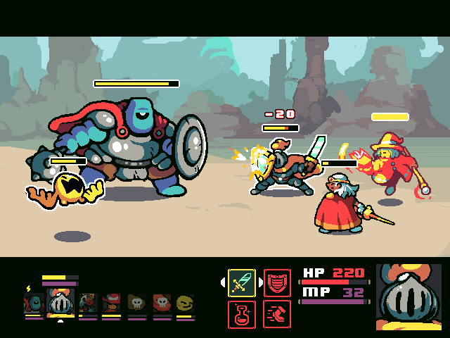
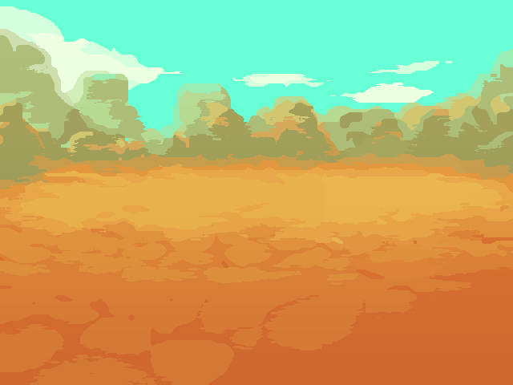
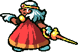
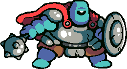
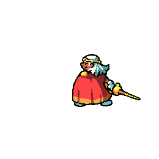
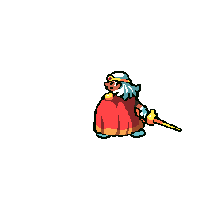

Build a complete turn-based combat scene with animated sprites, health bars, and interactive commands
In this guide, we will build a turn-based RPG battle system from scratch in Godot 4.x. You'll learn how to set up a battle scene, integrate animated sprite sheets, manage health bars, wire up UI signals, and implement attack/heal/defend mechanics — all explained step by step for beginners.
What we're building:

Our goal: a battle scene with animated characters, health bars, and command buttons.
if statements)res:// folder
Our asset pack includes characters, monsters, backgrounds, HUD elements, effects, and sounds. Here are the key assets we'll use:

backgrounds/1.png
char/paladin.png
monster/giant.pngHUD/bar/green.pngHUD/bar/red.pngHUD/bar/background.pngSetting and importing assets.
Characters come with sprite sheets — single images containing multiple animation frames arranged in a grid. Each character folder includes sheets for idle, attack, and hit animations.

char/paladin/idle.gif
char/paladin/attack.gifchar/paladin/hit.gifsprite-sheet-249x100.png tells you
each frame is 249×100 pixels. You'll need these numbers when configuring your
AnimatedSprite2D node.
Before building, let's understand how the scene is structured. In Godot, everything is organized as a tree of nodes. Here's our battle scene hierarchy:
@onready references. If you name a node HealthBar in the editor but reference
$Hero/HpBar in code, it won't work!
Now let's build the scene step by step.
BattleScene.battle_scene.tscn.Setting up the scene.
BattleScene.Background.backgrounds/1.png into the Texture property in the Inspector.We use AnimatedSprite2D instead of plain Sprite2D so we can play idle, attack, and hit animations.
BattleScene. Rename it
Hero.
Monster.| Node | Property | Value |
|---|---|---|
| Background | Position | (0, 0) |
| Hero | Position | (150, 200) |
| Hero | Scale | (2, 2) |
| Monster | Position | (500, 150) |
| Monster | Scale | (2.5, 2.5) |
Hero node. Add a TextureProgressBar child. Rename it
HeroHealthBar.
0100100HUD/bar/background.pngHUD/bar/green.pngMonster node, but use HUD/bar/red.png for the progress
texture.BattleScene. Rename it UI.
UI, add a Label named LogLabel — this will show
battle messages.ButtonContainer and position it at the
bottom of the screen.ButtonContainer, add three Button nodes:
AttackButton, HealButton, and DefendButton.
⚔️ Attack, 💊 Heal,
🛡️ Defend.
This is where your characters come to life! Instead of static images, we'll use sprite sheets — a grid of animation frames in a single image.
Hero (AnimatedSprite2D) node.idle.
char/paladin/sprite-sheet-249x100.png.8 for a natural pace.Idle animation (looping)
Attack animation (plays once)
Hit animation (plays once)
attack.
10. Uncheck Loop — attack should play only once.hit, import the hit frames, set FPS to 8,
no loop.Here's how to trigger animations from your script:
func play_hero_attack():
# Switch to the attack animation
hero.play("attack")
# Wait for the animation to finish
await hero.animation_finished
# Return to idle
hero.play("idle")
func play_hero_hit():
hero.play("hit")
await hero.animation_finished
hero.play("idle")animation_finished signal is emitted when a non-looping
animation reaches its last frame. We await it so the code pauses until the animation is
done, then we switch back to idle.
Repeat Steps 4.1–4.3 for the Monster node. If the monster doesn't have a sprite sheet, you
can use the static monster/giant.png and create a simple "shake" effect using a
Tween instead:
func shake_monster():
var original_pos = monster.position
var tween = create_tween()
tween.tween_property(monster, "position",
original_pos + Vector2(10, 0), 0.05)
tween.tween_property(monster, "position",
original_pos - Vector2(10, 0), 0.05)
tween.tween_property(monster, "position",
original_pos, 0.05)
await tween.finishedSignals are Godot's way of connecting events (like a button press) to functions in your script. This is a crucial concept for beginners!
Choose the method that works best for you:
AttackButton node in the Scene tree.pressed() in the signal list and double-click it.BattleScene as the target node._on_attack_button_pressed. Click
Connect.
HealButton → _on_heal_button_pressed and
DefendButton → _on_defend_button_pressed.
Add these lines inside your _ready() function to connect each button's
pressed signal to the corresponding handler function:
func _ready():
# Connect button signals to their handler functions
attack_btn.pressed.connect(_on_attack_button_pressed)
heal_btn.pressed.connect(_on_heal_button_pressed)
defend_btn.pressed.connect(_on_defend_button_pressed)
# Initialize the battle
hero.play("idle")
update_ui()
log_label.text = "A wild Giant appears!".connect() work? Every signal in Godot is an object.
Calling signal_name.connect(my_function) tells Godot: "When this signal fires, call
my_function." The function name is passed without parentheses — you're giving
a reference, not calling it.
Before we write any code, let's visualize the entire battle flow. This diagram shows exactly what happens each turn — follow the arrows from top to bottom!
Hero's Turn. This repeating cycle is why
we call it "The Battle Loop." Every game loop follows a similar pattern:
Input → Process → Check → Repeat.
Now for the main event — the GDScript that powers our battle! Attach a new script to
BattleScene. Let's build it piece by piece.
First, we set up references to our scene nodes and declare our stats:
@onready var hero = $Hero
@onready var monster = $Monster
@onready var hero_health_bar = $Hero/HeroHealthBar
@onready var monster_health_bar = $Monster/MonsterHealthBar
@onready var log_label = $UI/LogLabel
@onready var attack_btn = $UI/ButtonContainer/AttackButton
@onready var heal_btn = $UI/ButtonContainer/HealButton
@onready var defend_btn = $UI/ButtonContainer/DefendButton
var hero_hp : int = 100
var hero_max_hp : int = 100
var monster_hp : int = 100
var is_hero_turn : bool = true
var is_defending : bool = false
var battle_over : bool = false@onready: The @onready annotation assigns the
variable when the node enters the scene tree. Without it, the nodes might not exist yet and you'd get a
null error. Always use @onready for node references.
func _ready():
hero.play("idle")
monster.play("idle")
update_ui()
log_label.text = "A wild Giant appears! Choose your action."
func update_ui():
hero_health_bar.value = hero_hp
monster_health_bar.value = monster_hp
func set_buttons_disabled(disabled: bool):
attack_btn.disabled = disabled
heal_btn.disabled = disabled
defend_btn.disabled = disabledfunc _on_attack_button_pressed():
if not is_hero_turn or battle_over: return
set_buttons_disabled(true)
is_defending = false
# 1. Play attack animation
hero.play("attack")
await hero.animation_finished
hero.play("idle")
# 2. Damage logic + Shake effect!
var damage = randi_range(15, 25)
monster_hp = max(0, monster_hp - damage)
log_label.text = "Hero deals " + str(damage) + " damage!"
update_ui()
# Trigger the shake effect we wrote earlier
await shake_monster()
if check_battle_end(): return
is_hero_turn = false
await get_tree().create_timer(1.0).timeout
monster_turn()func _on_heal_button_pressed():
if not is_hero_turn or battle_over: return
set_buttons_disabled(true)
is_defending = false
var heal_amount = 25
hero_hp = min(hero_max_hp, hero_hp + heal_amount)
log_label.text = "Hero heals " + str(heal_amount) + " HP!"
update_ui()
is_hero_turn = false
await get_tree().create_timer(1.0).timeout
monster_turn()func monster_turn():
if battle_over: return
var base_damage = randi_range(8, 18)
var actual_damage = base_damage
if is_defending:
actual_damage = base_damage / 2
log_label.text = "Hero blocks! Takes only " + str(actual_damage) + " damage."
else:
log_label.text = "Monster hits Hero for " + str(actual_damage) + "!"
hero.play("hit")
await hero.animation_finished
hero.play("idle")
hero_hp = max(0, hero_hp - actual_damage)
update_ui()
if check_battle_end(): return
is_hero_turn = true
is_defending = false
set_buttons_disabled(false)The Defend button adds tactical depth. When the hero defends, incoming damage is halved on the next monster turn.
func _on_defend_button_pressed():
if not is_hero_turn or battle_over: return
set_buttons_disabled(true)
is_defending = true
log_label.text = "Hero braces for impact!"
is_hero_turn = false
await get_tree().create_timer(1.0).timeout
monster_turn()Every battle needs an ending! Let's detect when either the hero or monster runs out of HP:
func check_battle_end() -> bool:
if monster_hp <= 0:
log_label.text = "🎉 Victory! The Monster is defeated!"
battle_over = true
set_buttons_disabled(true)
return true
if hero_hp <= 0:
log_label.text = "💀 Defeat... The Hero has fallen."
battle_over = true
set_buttons_disabled(true)
return true
return falsebool? By returning true when the battle ends,
we can use if check_battle_end(): return in our attack/heal functions to immediately stop
processing. This prevents the monster from attacking after it's already dead!
Ready to level up? Try these extensions on your own:
Add a "Flee" button with a 50% chance to escape. Use
randi_range(0, 1) to decide success. If it fails, the monster gets a free attack.
Show floating damage numbers at the hit location that fade upward. Use a Label with a Tween to animate the position and opacity.
Add a Mana Points (MP) system. The hero starts with 50 MP. A special attack costs 20 MP but deals
30–50 damage. Add a blue progress bar using HUD/bar/purple.png.
Use an Array to store multiple monsters with separate HP values. Let the player choose which monster to target.
Let the player choose a character class at the start (Paladin, Wizard, Bowman, Warrior) — each
with different stats. Use the sprite sheets from the char/ folders.
Add background music (from music/) and sound effects (from sound/)
using AudioStreamPlayer. Trigger them on attack, heal, victory, and defeat.
Quick reference for the GDScript concepts used in this tutorial:
@onready
Assigns a variable when the node enters the scene tree. Used for node references so they're guaranteed to exist.
$NodePath
Shorthand for get_node("NodePath"). Finds a child node by its path relative to the
current node.
await
Pauses the function until a signal is emitted. Used to wait for timers, animations, or other async operations.
signal
An event notification system. Nodes emit signals (like pressed) and other nodes can
respond by connecting a function.
randi_range(min, max)
Returns a random integer between min and max (inclusive). Perfect for
damage variation.
AnimatedSprite2D
A node that plays frame-based animations from a SpriteFrames resource. Supports multiple named animations (idle, attack, etc).
SpriteFrames
A resource that holds animation data — frame images, playback speed, and loop settings — for an AnimatedSprite2D.
TextureProgressBar
A progress bar that uses textures for its appearance. Set Under (background) and Progress (fill) textures.
Tween
Smoothly animates properties over time. Great for shake effects, fading, and movement without keyframe animations.
create_timer(sec)
Creates a one-shot timer. Combined with await, it pauses execution for the specified
seconds.
This activity is worth 50 points. Your submission will be graded based on the following criteria:
| Criteria | Description | Points |
|---|---|---|
| Scene Setup | Correct node tree structure: BattleScene root, Background, Hero, Monster, UI layer with buttons and log label. Proper naming of all nodes. | 10 |
| Animated Sprites | Hero uses AnimatedSprite2D with a working SpriteFrames resource. Idle, attack,
and hit animations are configured and play correctly. |
10 |
| Health Bars & UI | Both Hero and Monster have TextureProgressBar nodes with correct textures.
Health bars update accurately during battle. Log label displays messages. |
8 |
| Battle Logic | Attack deals random damage, Heal restores HP (capped at max), turns alternate between Hero and Monster. Buttons are disabled during the Monster's turn. | 10 |
| Signal Connections | All three buttons are correctly connected to their handler functions (via editor or code). No errors on button press. | 5 |
| Victory & Defeat | The game correctly detects when HP reaches 0. Displays a victory or defeat message and disables buttons when the battle ends. | 5 |
| Bonus: Defend | Defend button is implemented and reduces incoming damage by half on the next Monster turn. | 2 |
| Total | 50 | |
Test what you've learned! This quiz is not graded — it's just for self-assessment. Pick the best answer for each question, then check your score.
What is the correct node type for displaying animated character sprites?
What does the @onready annotation do?
How do you connect a button's pressed signal via GDScript?
signal.connect(callable).
What does randi_range(10, 25) return?
Which node is used for the health bar in this tutorial?
Why do we use await hero.animation_finished after playing an attack?
What does the Defend action do in our battle system?
is_defending = true, the monster's damage is divided by 2
before being applied to the hero's HP.What is a SpriteFrames resource?
What does create_tween() do?
Why does check_battle_end() return a bool?
true lets us write
if check_battle_end(): return — stopping the function early so the monster doesn't
attack after dying.
Congratulations! 🎉 You've built a complete turn-based battle system with animated sprites. Here are more ways to expand your game:
rpg-battle-system/fx/ for spell
and hit particles.item/ folder has 80+ icons — build an inventory and
consumable items.FileAccess API to save player progress
between battles.